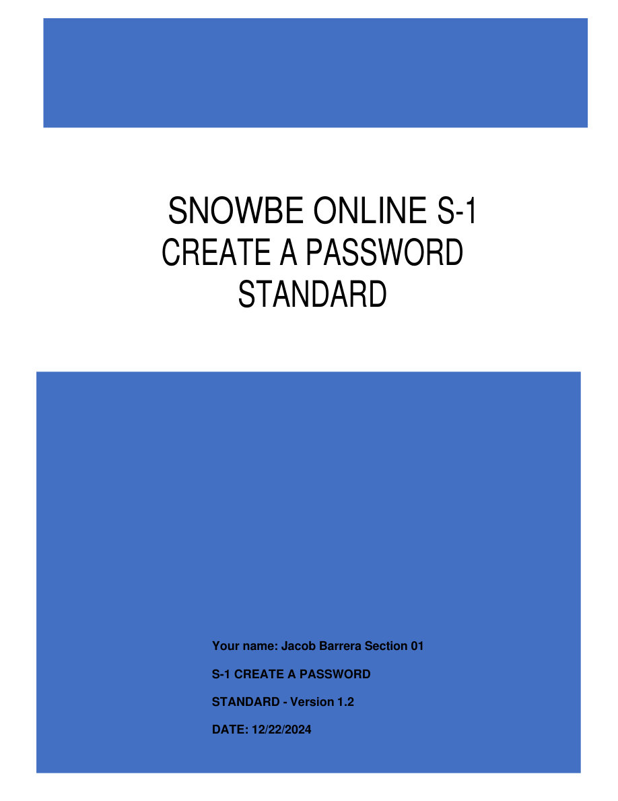
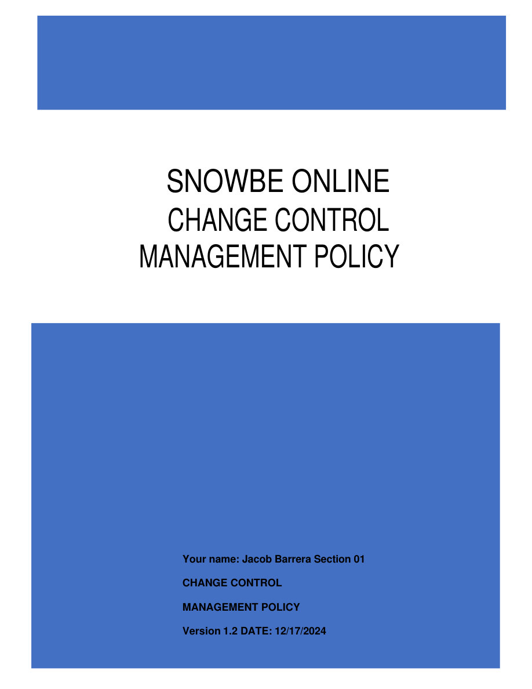
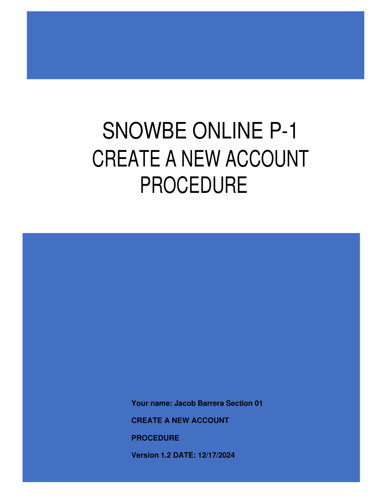

Password Standard

Sets the rules for password length, 90-day rotation, and that passwords are never shared or written down.
Academic / lab project · Portfolio IV
Three written policy documents defining how passwords, system changes, and new employee accounts get handled — the same rules help desk technicians enforce every day, based on NIST (National Institute of Standards and Technology) security guidelines.
What you're looking at: each card shows the cover page of one policy document I wrote for this assignment, plus a one-line summary and a link to open the full PDF. (These were written for "SnowBe Online," a fictional company used as the practice scenario in this Full Sail assignment — not a real employer.)

Sets the rules for password length, 90-day rotation, and that passwords are never shared or written down.

Defines the request → review → approval → implementation → verification workflow every system change must follow.

Walks through creating a new employee account from manager request through IT setup, MFA, and access verification.
Most entry-level candidates never write policy — they just click through tickets. Writing these documents means I understand why account-creation and change-management tickets exist in the first place, not just the steps to close them.